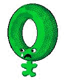

The Maryland Academic Quiz Team Retired Lexicon
Alas, all neologisms are not created equally, and some fade into disuse.
To keep the lexicon fresh, archaic terms have been removed and placed
here for posterity.
-
Assmeat (ass meet) n., pl. -meats.
-
A player who is absolutely 100% "gair-awn-teed" to lose in a competitive endeavor. Usage: "Dude --
you're just so much
assmeat." [etymology -- probably derived from "Meat," which was the name written on a
scoreboard at CBI Nationals for a team playing against Virginia. The ubiquitous prefix "ass-"
was somehow added, and the meaning was changed. See assluck
for another instance of this prefix.]
-
Ba·ker·i·sm (baek' ur ism) n., pl.
-isms.
-
1. A long pause while a quiz bowl contestant tries to remember an answer
he knows, possibly resulting in a neg 5:
"It's that guy with the trident!" (Named for 1993-4 MAQT president
Matt Baker, now at Berkeley).
-
Bale (bael) vt.
-
1. To extricate one's team from a game they have lost by trumping up an
unsupportable protest. Named for MIT coach Jim Bales: "We lost to
Maryland, but our coach Baled us out."
-
Buzz·o·cen·trism (buz o cen' trism) n.
-
1. On a web page, the tendency of a quiz bowl team's buzzer system to be
depicted as the archetypal system.
-

Chuck·le·head
(chuk' uhl hed) n., pl. -heads.
-
1. Blockhead. 2. A small, melancholy person
(Homo Chucklecephalus) whose head is made of chewy,
sugar-coated candy, shaped like a torus, and as large as the rest of his
body. 3. Quiz Bowl. A foolish player of academic quiz
games: "Taking 5 negs in a row is a sure sign that you're a
chucklehead." A favorite term of Kevin Keegan, the coach of the MD
team at the Panasonic national high school tournament. See
BISCUIT.
-
I'm the Great·est (eyem the gray' test) interj.
-
1. An exclamation uttered, possibly humorously, by a certain unnamed
Maryland player upon answering even a simple question. 2. This same
remark, quoted in a self-deprecatory manner by any quiz bowl player who
wishes to admit the insipidity of the question he just answered:
"[buzz] Two plus two? That would be four. Yes, I'm the greatest!"
-
Joyce·man (Jois' man) n.
-
1. A mysterious muse invoked by some Georgia Tech players, particularly
useful in answering stream of consciousness questions:
"The Joyceman cometh!" 2. The specific player from Georgia Tech,
Corey Edwards, who first called upon this muse.
-
"Khon speaks!" (cone speeks) interj.
-
1. An answer of indisputable accuracy. Counterexamples such as the
unavoidable tendency to confuse "Tommy Lee" with "Tommy Moe" fall under
the category of a KHONISM, which is an inexplicable
word or phrase uttered by Khon.
-
Re·ac·tion (ree ack shun) n., pl.
-actions.
-
1. reduction (From a rather nasty incident at Swarthmore QOTC a few
years ago).
-
Star·sin·ick·i·ty (star cin ick' ih
tee) n., pl. -ities.
-
1. A violent reaction induced by losing to a team unfit to even touch
one's buzzer, especially those responses that result in the destruction
of writing implements or physical contact with walls.
-
Swis·dak·i·an (swiz dack' ee an) adj.
-
1. Any buzz that requires the prescient ability to accurately predict
a bizarre twist in the question and compensate for it to the astonishment
of teammates and opponents.
-
Tooth·brush·ing toss·up (tooth' brush ing
toss' up) n., pl. -ups.
-
1. What CBI calls a "common experience question." 2. A question that
requires no knowledge to answer; a "find your ass" question.
-
Tris·cuit (tris' kit) n., pl.
-cuits.
-
1. A commerical brand of wheat cracker, the container of which can be used
to hide Gra-Lab clocks from view.
-
Vi·shious (vi' shus) adj.
-
1. Having a demeanor that causes one to throw writing implements at a
moderator: "Did you see how many bounces that pencil made? That was
vishious!"
[
Back to MAQT Home Page
]
Maintained by David Hamilton
Comments, complaints can be sent to the author at
dhamiltn@wam.umd.edu
Last updated October 16, 1998.